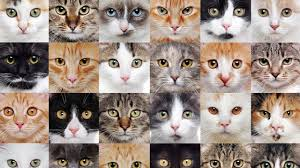

Por que a maioria dos gatos não tem raça definida?
- Entenda a origem dos felinos domésticos e por que o “SRD” é tão comum.

Por que a maioria dos gatos tricolores são fêmeas?
- A genética dos gatos tricolores faz com que a grande maioria deles seja do sexo feminino.

Dieta de gatos: o que realmente importa na alimentação felina
- Saiba como escolher a dieta certa para manter seu gato saudável.

Visão felina: por que os gatos enxergam tão bem no escuro e como isso os torna caçadores eficientes